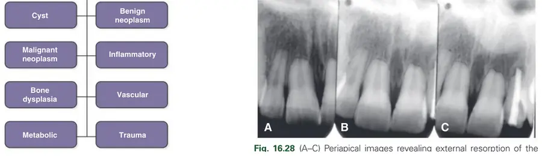

نسخه استخراجشده؛ ترجمه یا تأیید علمی انجام نشده است. وضعیت: captured
این یونیت چیز تازهای یاد نمیدهد. کارش این است که آنچه در ۳۱ یونیت گذشته ساختهای را در قالب پرسشهای ترکیبی بیازماید — پرسشهایی که پاسخشان از دو یا سه یونیت متفاوت میآید.

هر ضایعه را با همان ترتیبی بخوان که در ماژول ۲ ساختی:
و قاعدهی طلایی افتراق: حاشیه و اثر بر ساختارهای مجاور بیش از هر چیز دیگری به تو میگویند با چه دستهای طرفی. ساختار درونی، دسته را باریک میکند؛ ولی دسته را تعیین نمیکند.
و مرزی که بیش از همه اشتباه میشود: جابهجایی در برابر تحلیل. رشد آهسته ساختارها را کنار میزند؛ رشد تهاجمی آنها را میخورد. همین یک تمایز، خوشخیم و بدخیم را در بیشتر موارد از هم جدا میکند.
بیماریهای ساختار استخوان از دستهبندی بالا بیرون میزنند: در آنها اغلب مرز روشنی وجود ندارد و ضایعه با استخوان طبیعی درهم میآمیزد. و تروما منطق خودش را دارد: دنبال ناپیوستگی کورتکس، پله، و تغییر تراز بگرد، نه دنبال حاشیه و ساختار درونی.
نوع سؤال: ساخت کلمه · 5 خانه
حروف منبع: ل · ل · ح · ی · ت
نوع سؤال: ساخت کلمه · 5 خانه
حروف منبع: ش · ا · ح · ه · ی